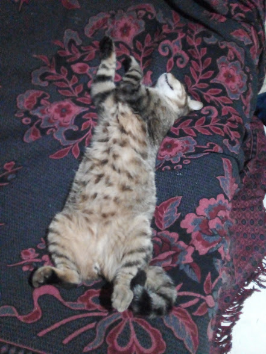
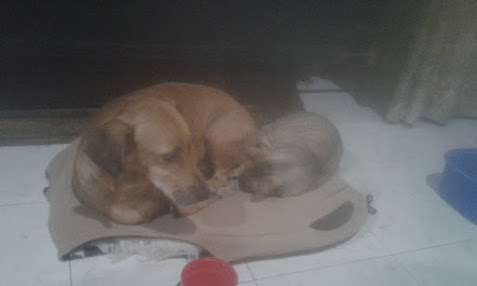
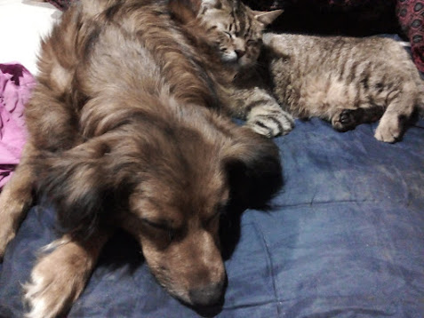
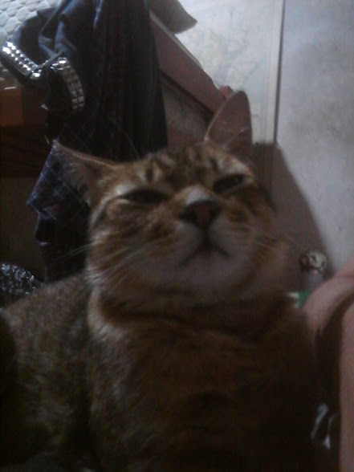

La llegada del michi
Había una vez un gato llamado Mauricio, cuya historia comenzó en la bulliciosa ciudad de Buenos Aires. Mauricio tenía la suerte de haber sido encontrado por el hermano de su dueño, quien lo rescató de las calles de la ciudad. Su hermano, lo trajo a casa, y desde ese día, Mauricio se convirtió en un miembro especial de la familia.
Mauricio tenía un don único. Era extraordinariamente envolvente y tenía la capacidad de convencer a todos en la casa de que le dieran lo que quería. Siempre que tenía hambre, simplemente se acercaba a Manuel con sus ojos grandes y brillantes, y nadie podía resistirse a darle un poco de su comida. Si quería cariño, se acurrucaba en el regazo de su hermana Laura y ronroneaba suavemente, envolviéndola con su encanto felino.
 Lo que hacía que la historia de Mauricio fuera aún más especial es que tenía dos hermanos perros, Tomi y Sylvana. A pesar de ser de especies diferentes, los tres se llevaban de maravilla. Mauricio había conquistado sus corazones a base de cariño y ternura, y los tres eran inseparables. Juntos, hacían travesuras, exploraban el jardín y compartían momentos de diversión y alegría.

Mauricio, con su capacidad envolvente, se convirtió en el pegamento que mantenía unida a esta peculiar y amorosa familia. Su historia era un recordatorio de que el amor y la amistad pueden superar las diferencias y que un gato especial como Mauricio podía cambiar la vida de todos los que tenía la suerte de conocerlo.